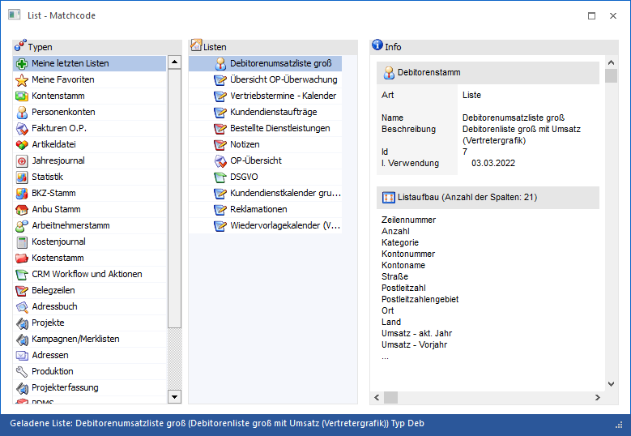
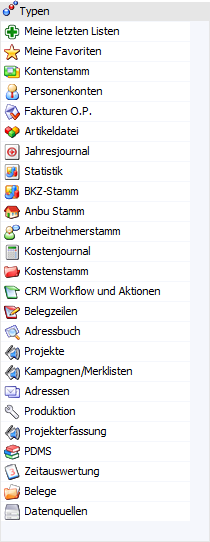
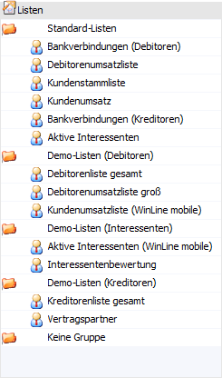
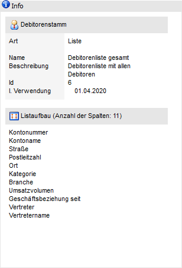

Wenn bei der Auswahl einer WinLine LIST-Liste das Lupen-Symbol bzw. die Taste F9 zur Verfügung steht und gedrückt wird, dann öffnet sich das Programm "List - Matchcode". An dieser Stelle kann gezielt nach Listen gesucht werden.

Das Fenster "List - Matchcode" ist in die folgenden Bereiche untergliedert:
ü Tabelle "Typen"
ü Tabelle "Auswertungen"
ü Bereich "Info"
Tabelle "Typen"

In der Tabelle werden entsprechenden der Programmberechtigungen alle List-Typen angezeigt. Durch Anwahl eines Typs wird die Tabelle "Listen" entsprechend gefüllt. Neben den List-Typen stehen noch folgende weitere Auswahlen zur Verfügung:
ü
In der Rubrik "Meine letzten Listen"
werden jene 11 Listen angezeigt, welche vom Benutzer zuletzt ausgegeben
wurden.
ü
In der Rubrik "Meine Favoriten" werden die
eigenen Favoriten angezeigt. Die Favoriten werden mit Hilfe des Buttons "zu
Favoriten hinzufügen" definiert.
Achtung
Wenn der List - Matchcode in der Applikation WinLine INFO aufgerufen wird, dann stehen zusätzlich zu "Meine letzten Listen" und "Meine Favoriten" nur die Datenbereiche "CRM Workflow und Aktionen" und "Adressbuch" zur Verfügung.
Tabelle "Auswertungen"

In der Tabelle werden alle Listen, gemäß des zuvor gewählten Typs (siehe Tabelle "Typen"), angezeigt. Eine Auswahl der Liste kann per Doppelklick oder Auswahl und Drücken des Buttons "Ok" bzw. Taste F5 erfolgen.
Bereich "Info"

Wird eine bestehende Liste bzw. Gruppe ausgewählt, so werden auf der rechten Seite des Fensters diverse allgemeine Information (bezogen auf das Ausgangsobjekt) angezeigt.
Buttons

Ø Ok
Durch Anwahl des Buttons "Ok" bzw. der Taste F5 wird die gewählte Liste in das Ausgangsprogramm übernommen.
Hinweis
Die Auswahl einer Liste kann auch per Doppelklick erfolgen.
Ø Ende
Durch Anwahl des Buttons "Ende" bzw. der Taste ESC wird das Fenster geschlossen.